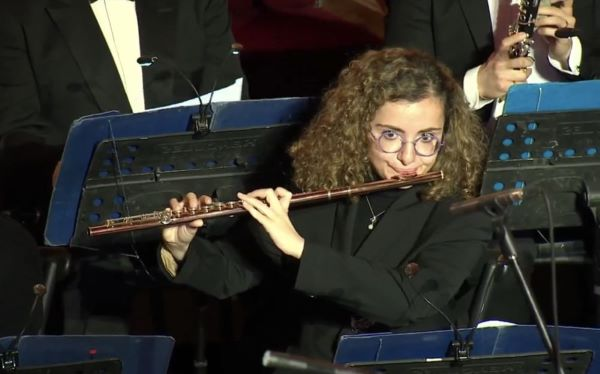

Autumn 2025: 11/09/2025 The Prophet at Trinity Laban, St Alfege
03/10/2025 Lebanese National Orchestra start of the season concert
10/10/2025 Lebanese National Orchestra Tchaikovsky 6
31/10/2025 Lebanese National Orchestra Brahms 1
07/11/2025 Lebanese National Orchestra Tchaikovsky 5
15/11/2025 Lebanese National Orchestra old and new favorites
12/12/2025 Lebanese National Orchestra Khachaturian
16/12/2025 Lebanese National Orchestra Christmas Concert
Spring 2025:14/05/2025 The Prophet at St Georges Hanover Square
13/06/2025 The Prophet at St Anne, Kew
